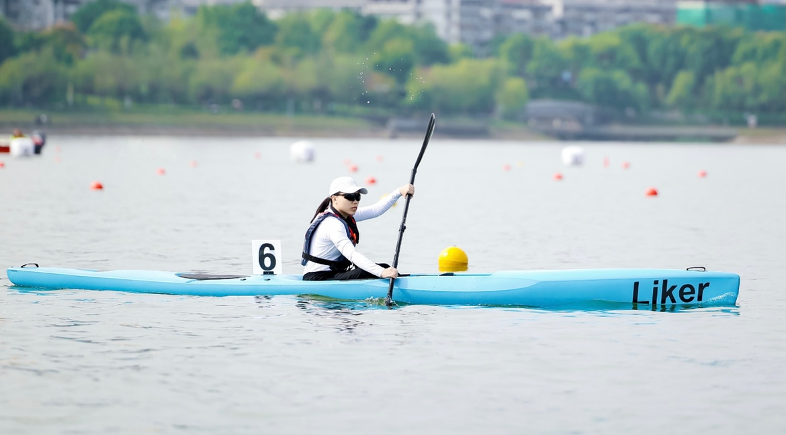

Xinhe Shi (石欣禾)


 Hi! I am a final-year undergraduate student at Zhejiang University, majoring in Computer Science and Technology. I am applying for Fall 2026 Ph.D. programs, with the goal of advancing my research training and contributing to the field through innovative and impactful work.
Hi! I am a final-year undergraduate student at Zhejiang University, majoring in Computer Science and Technology. I am applying for Fall 2026 Ph.D. programs, with the goal of advancing my research training and contributing to the field through innovative and impactful work.
 My research interests broadly spread across large language models, multilingual NLP and multi-modality. I am currently exploring LLM-based language similarity and LLM's multilingual capability.
My research interests broadly spread across large language models, multilingual NLP and multi-modality. I am currently exploring LLM-based language similarity and LLM's multilingual capability.